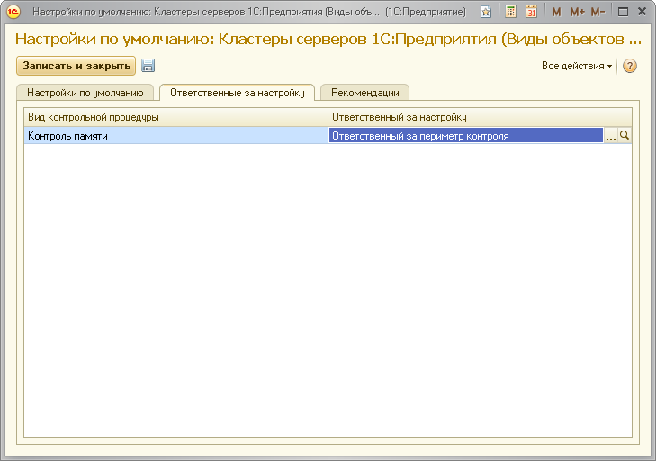

Данная форма поможет вам указать настройки, которые будут использоваться как настройки по умолчанию для всех рабочих серверов, регистрируемых в ЦКК.
Во вкладке "Ответственные за настройку" вы можете указать роли пользователей по умолчанию, ответственных за выполнения задач по настройке контрольных процедур.

В поле "Сетевое имя кластера" нужно указать сетевое имя кластера серверов в локальной сети.
В поле "Порт кластера" нужно указать IP port кластера.
В полях "Администратор кластера" и "Пароль администратора кластера" нужно указать имя администратора кластера и его пароль. Если администратор кластера не создан, то поля следует оставить пустыми.